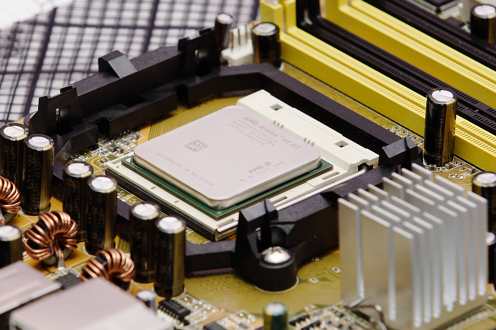
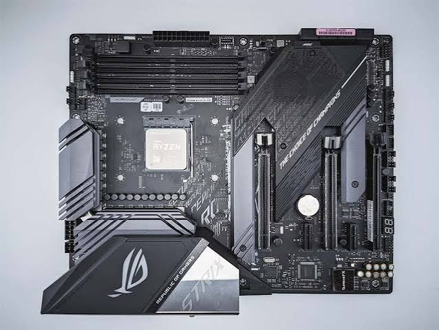
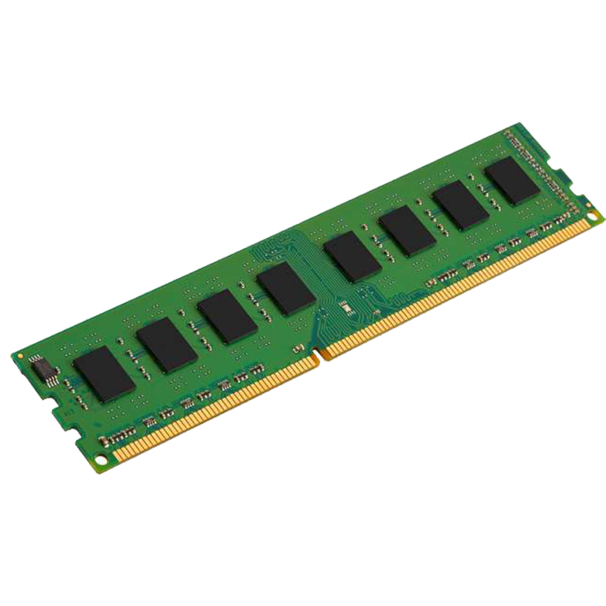
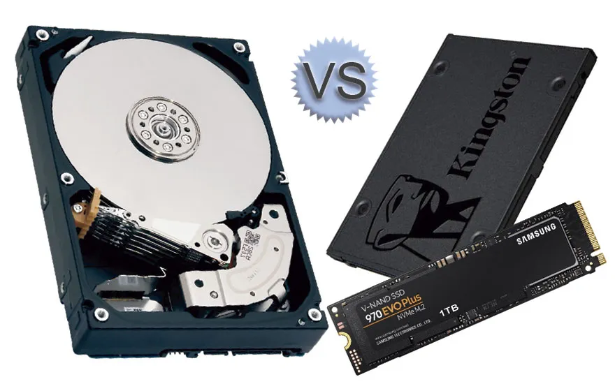
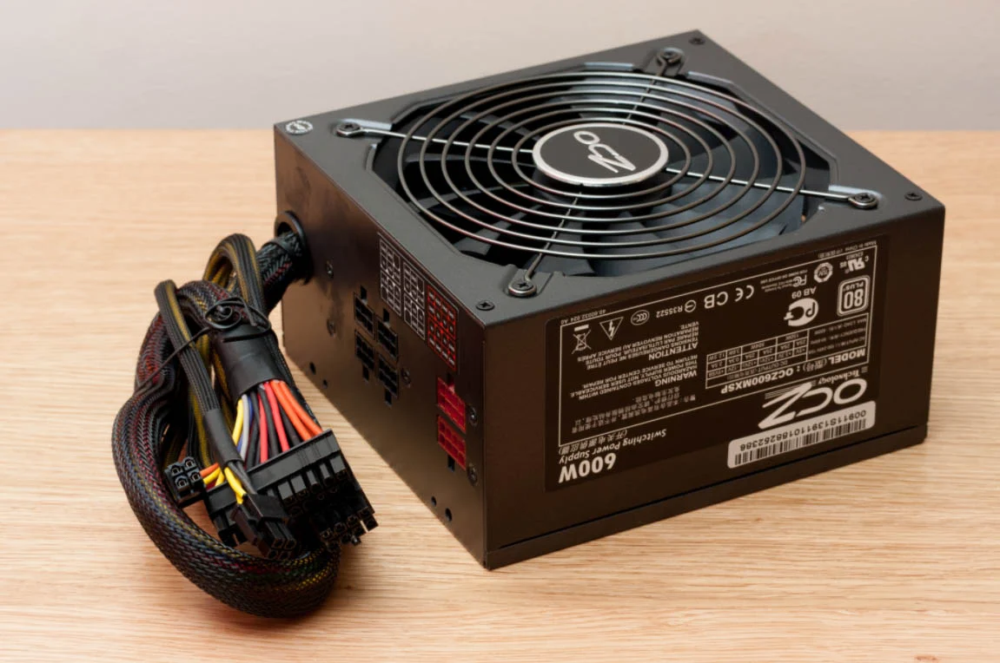
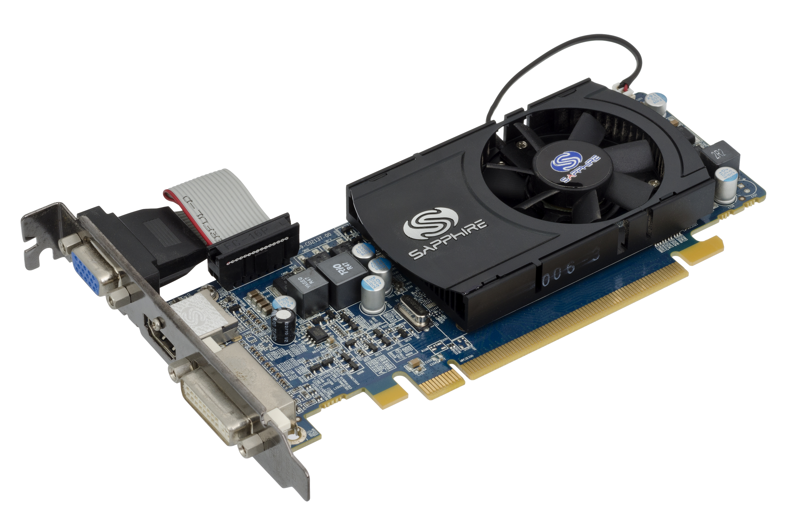

Debes garantizar la accesibilidad de los contenidos de conocimientos básicos y de profundización creados para tratar el tema propuesto.
NOTA: Hay dos contenidos digitales, por lo que hay que completar dos apartados 5.A en el portfolio.
¿Cómo evidenciar?
Nota: si creas un contenido digital de audio y/o vídeo, para evitar problemas de autoría, es necesario que consten tu locución y/o tu propia imagen.
Indicadores de logro:
Para abordar el presupuesto de los 25 ordenadores del aula, es indispensable conocer las funciones básicas de los seis componentes esenciales de cualquier equipo informático:
Es el "cerebro" del ordenador. Se encarga de procesar las instrucciones de las aplicaciones, realizar los cálculos matemáticos y coordinar el trabajo de los demás componentes.

Es la gran placa de circuito impreso a la que se conectan directamente todos los demás elementos del ordenador (CPU, RAM, discos, tarjeta gráfica). Su función es hacer que todos los componentes se comuniquen entre sí.

Es la memoria de trabajo temporal y ultrarrápida del ordenador. Almacena los datos de los programas que estás utilizando en el momento actual. Cuando apagas el ordenador, todo su contenido se borra.

Es el sistema de almacenamiento permanente. Guarda el sistema operativo, los programas instalados y tus archivos personales (documentos, imágenes, etc.). A diferencia de la RAM, los datos no se pierden al apagar el equipo.

Es la encargada de recibir la corriente eléctrica de la pared (corriente alterna) y transformarla en los voltajes continuos que necesitan los componentes internos para funcionar de manera segura.

Es el componente especializado en procesar imágenes, vídeos, gráficos e interfaces visuales para enviarlos a la pantalla o monitor.
